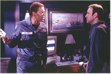

The Negotiator is one of those gloriously unbelievable screenplays and overproduced films that escapist-prone audiences will lap up despite its shortcomings. On the plus side, the razor-sharp talents of Samuel L. Jackson and particularly Kevin Spacey will work up a thespian lather as they spit loud words off each other in this edgy action drama pitting veteran Chicago hostage negotiator Danny Roman (Jackson), wrongly accused of his partner’s murder and the misappropriation of a police disability fund, against his highly focused west side counterpart Chris Sabian (Spacey). It’s Face/Off without the surgery, Speed without the bus. The Negotiator even steals a plot twist from the latter film.
One of the problems is that Spacey doesn’t even show up until 45 minutes into the film in a low key domestic confrontation that plays Sabian’s at-home stress. With an actor as exciting as Spacey, it’s a shame he has to wait in the wings so long. His confrontations with Roman remind me of those electric moments that Al Pacino and Robert De Niro appear together in Heat; too few in an overlong film.

Offsetting the tense dramatic moments are nearly comedic (and unheralded in the press material) offerings by actors Stephen Lee (as a frustrated telephone go-between who nearly has a heart attack at Roman’s fast-talking expense), and Paul Giamatti (son of A. Bartlett Giamatti, late president of Yale University and Commissioner of Baseball) and Siobahn Fallon as hostages Rudy and Maggie. Giamatti is also seen currently in Saving Private Ryan and The Truman Show, but his ratty inspiration in The Negotiator is firmly rooted in his portrayal of Kenny ‘Pig Vomit’ Rushton in last year’s Private Parts. SNL alum Fallon adds to an impressive filmography decorated with nearly a dozen roles including the dopey wife of bug-man Vincent D’Onofrio in Men in Black and the schoolbus driver in Forrest Gump.Director of Photography Russell Carpenter, on a breather after a succession of films with James Cameron (Titanic, True Lies), shows Chicago in well-lit nighttime splendor, while Holger Gross’s production design shows a decisively claustrophobic bent. But Gray is at the helm and he should have held up production to re-write the storylines. He plays with a lot of techno gadgets and adds some nice visual touches, but then forgets to put paramedics in an ambulance. I did like the filmmaker’s use of muted flash photograph pops as the intrusive press mongrels harp around the anti-hero, and there’s an intriguingly intercut sequence in which Sabian, in a ground level control center, is shown rewriting the rules of engagement as a hand-held camera quickly glimpses his interaction with the SWAT team supervisors, while Roman’s actions are shown in a more deliberate and less agitated fashion as he verbally counter-punches.
The Negotiator is a chess match played out with human lives. Talky and methodical. Unfortunately the writers were writing as if they were playing checkers. It’s flashy enough for most audiences, but not nearly as intelligent as it could have been.